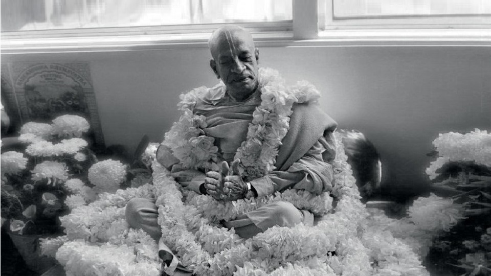

Биография Шрилы Прабхупады
Ом Вишнупада Парамахамса Паривраджакачарья Ашотара Шата Шри Шримад Триданди Госвами Его Божественная Милость Абхай Чаранаравинда Бхактиведанта Свами Шрила Прабхупада Махараджа
1).Ом Вишнупада- Тот кто принял прибежище у стоп Господа Вишну 2).Парамахамса - Санньяси (монах принявший обет отречения) высшего уровня (есть 4 стадии санньясы, Парамахаса - это высшая стадия) 3.Паривраджакачарья - Странствующий проповедник 4).Ашотара Шата - священное число 108 5).Шри Шримад - Примерно переводится на русский как "благословенный" 6).Триданди Госвами - Тот, кто принял триданда санньясу - титул всех санньяси в линии от Шрилы Бхактисиддханты Срасвати Тхакура. Триданда (три посоха) отличается от экаданды (одного посоха) Экаданда-санньясу принимают имперсоналисты, тогда как вайшнавы принимают триданда-санньясу, три посоха связанные воедино указывают на то, что вайшнав принимая санньясу дает обет использовать в служении Кришне полностью свои ум, тело и речь. Триданди — это тот, кто принял триданду. Госвами означает: "го - чувства, свами - хозяин, повелитель", то есть повелитель чувств. 7). Его Божественная Милость - Духовный учитель - представитель Бога, Божественная Милость Кришны. 8). Абхай Чаранаравинда - имя, которое Шрила Прабхупада получил при инициации, буквально означает: "Тот, кто обрел бесстрашие, приняв прибежище у лотосных стоп Господа". При рождении родители дали Шриле Прабхупаде имя Абхай (бесстрашный), при инициации Шрила Бхактисиддханта Сарасвати добавил "Чаранаравинда". 9).Бхактиведанта - титул присвоенный Шриле Прабхупаде его духовными братьями, Бхактиведанта означает "постигший суть философии бхакти" 10).Свами - имя санньяси, которое Шрила Прабхупада получил при посвящении в санньясу, не путать с титулом "Свами = Госвами". 11).Прабхупада - "Тот, кто принял прибежище у стоп Прабху - Кришны", другой перевод: "Великий учитель, у стоп которого нашли прибежище многие другие учителя" 12).Махараджа - Уважительно обращение к санньяси , буквально значит - Великий царь (повелитель), тот кто обрел власть над умом и чувствами
Основатель и Ачарья ИСККОН и ББТ. Это значит, что Шрила Прабхупада является основателем ИСККОН и ББТ (издательства Бхактиведанта Бук Траст) и главным Ачарьей (главным духовным учителем) для всех поколений членов ИСККОН.
Краткая биография
Контакт со Шрилой Прабхупадой позволяет ощутить атмосферу духовного мира. Своими письменными наставлениями, а также беседами, лекциями и даже взглядом он противостоял силам тьмы в этом мире, в котором души, погрузившиеся в глубокую иллюзию, забыли о своем истинном духовном облике и отношениях с Верховным Господом. Шрила Прабхупада родился 1 сентября 1896 года в Калькутте и был наречен Абхаем Чараном Де. Его отца, торговца тканями, звали Гоур Мохан Де, а мать – Раджани. Согласно бенгальской традиции, родители пригласили в дом астролога, чтобы тот составил гороскоп ребенка, и очень обрадовались, услышав благоприятные предсказания. В числе прочего астролог предсказал что, когда Абхаю исполнится семьдесят лет, он пересечет океан, станет великим религиозным проповедником и откроет сто восемь храмов.
Абхай жил в доме 151 на Харрисон Роуд, в индийском квартале северной части Калькутты. Отец Абхая, Гоур Мохан Де, принадлежал к аристократической купеческой касте суварна-ваник, к семейству, которое вело свою родословную от древнего мудреца Гаутамы. Напротив дома Де находился храм Радхи-Говинды, где на протяжении полутора веков родственники Абхая поклонялись Божествам Радхи-Говинды. Каждое утро Абхай Чаран приходил в этот храм вместе со своей матерью, отцом или слугой. Гоур Мохан был чистым вайшнавом и воспитывал сына так, чтобы тот рос в сознании Кришны. Поскольку родители Гоура Мохана тоже были вайшнавами, он никогда в жизни не притрагивался к мясу, рыбе, яйцам, не пил чая и кофе. Каждый вечер, вернувшись из лавки, он садился перед домашним алтарем и с благоговением проводил службу Господу Кришне. Мягкий и добрый по природе, он никогда не наказывал Абхая, даже если порой ему нужно было приструнить сына, он, прежде чем сделать это, приносил ему свои извинения: Ты – мой сын, и потому я должен тебя наказать. Это мой долг. Даже отцу Чайтаньи Махапрабху приходилось наказывать своего сына, так что не взыщи.
Гоур Мохан хотел, чтобы его сын вырос преданным: он мечтал, чтобы Абхай стал слугой Радхи и Кришны, проповедовал «Бхагаватам» и научился играть на мриданге. Когда Абхаю было около шести лет, он попросил отца, чтобы тот дал ему мурти, которому бы он мог поклоняться самостоятельно. Гоур Мохан купил пару маленьких Божеств Радхи-Кришны и подарил их сыну. С тех пор, что бы ни ел маленький Абхай, он сначала предлагал это Радхе и Кришне. Подражая отцу и священнослужителю из храма Радхи-Говинды, он предлагал своим Божествам масляную лампадку и укладывал их на ночь спать. А однажды, вместе с друзьями он устроил настоящую мини Ратха-Ятру, к которой присоединились все жители квартала.
Когда Абхай учился в колледже, он женился. В это время он также увлекся национально-освободительным движением Ганди. Он отказался от диплома, и отец помог ему устроиться на должность начальника отдела в фармацевтической фирме друга их семьи. В 1922 году произошла встреча Шрилы Прабхупады со своим духовным учителем Бхактисиддхантой Сарасвати Тхакуром. Шрила Бхактисиддхантаджи сразу же обратился к нему: Вы образованные молодые люди. Вы должны проповедовать учение Господа Шри Чайтаньи по всему миру.
На возражение Абхая о том, что сначала Индия должна обрести независимость, он ответил: Сознание Кришны не зависит от того, кто стоит у власти. Оно так необходимо человечеству, что мы не имеем права ждать, пока Индия обретет независимость.С того дня Шрила Прабхупада принял Шрилу Бхактисиддханту Сарасвати в своем сердце духовным учителем. Он начал общаться с преданными Гаудия Матха и изучать труды великих ачарьев.
В 1932 году в Аллахабаде он получил первое и второе посвящение, а в 1935 году во Вриндаване Шрила Бхактисиддхантаджи дал ему наставление всей его жизни: Если у тебя когда-нибудь будут деньги – печатай книги. Те же наставления были получены и в последнем письме Шрилы Бхактисиддханты Сарасвати, которое он написал незадолго до своего ухода в конце 1936 года: Я совершенно уверен, что, владея английским, ты сможешь донести наши идеи до людей, которые не знают языков (бенгальского и хинди) … Это принесет большое благо и тебе, и твоим слушателям. Я очень надеюсь, что ты сможешь успешно проповедовать на английском языке.
В 1939 году за ученость и эрудицию духовные братья дали ему титул «Бхактиведанта». В 1944 году, следуя наставлениям своего Гуру Махараджа, Шрила Прабхупада начал выпускать журнал на английском языке «Назад к Богу», через который он проповедовал идеи сознания Кришны. В конце 40-х годов он начал работать над написанием комментария к «Бхагавад-гите», но, помимо этого, он постоянно проповедовал учение Господа Чайтаньи в своих письмах. Шрила Прабхупада писал многим политическим лидерам, включая самого Ганди, влиятельным знакомым, тем людям, чьи статьи он читал, или тем, на чью деятельность обратил внимание, просматривая газеты. Называя себя их смиренным слугой, он излагал свои взгляды на то, как, обратившись к исконной индийской культуре сознания Кришны, можно разрешить все противоречия, но, как правило, его письма не получали ответа.
В 1950 году Шрила Прабхупада начал все меньше уделять времени бизнесу и семейным делам, и все больше – проповеди. Не встречая поддержки в Гаудия Матх, который в ту пору переживал сложный период, в 1954 году он основал «Лигу преданных», которую видел своего рода духовной Организацией Объединенных Наций. Тогда же Шрила Прабхупада принял первого ученика. Вскоре он окончательно порвал с семьей, не поддерживавшей его в проповеднической деятельности, и поселился во Вриндаване. Несмотря на финансовые и другие трудности, Шрила Прабхупада продолжал использовать все возможности для того, чтобы писать и издавать «Назад к Богу». В 1959 году, получив во сне наставления своего Гуру Махараджа, Шрила Прабхупада принял санньясу от своего духовного брата Шрилы Бхактипрагьяны Кешавы Махараджа. Продолжая жить во Вриндаване, в храме Радха-Дамодары, он начал писать комментарий к «Шримад Бхагаватам», и с большими трудностями ему удалось издать три тома комментариев к Первой Песни.
В 1965 году Шрила Прабхупада начал строить планы поездки с проповеднической миссией в Америку и, получив с большими трудностями все необходимые документы и бесплатный билет на грузовом судне «Джаладута», 13 августа он отправился в путь, чтобы попытаться выполнить указание своего духовного учителя.С собой он взял только маленький чемоданчик, зонтик, запас крупы, сорок рупий и, самое главное, двести комплектов трехтомника «Бхагаватам». По дороге он пережил два инфаркта, но, милостью Шримати Радхарани, смог благополучно достичь берегов Америки. Первые несколько месяцев Шрила Прабхупада прожил в семье сына своего знакомого, г-на Агарвала в Батлере. Он выступал в городе перед самой разной аудиторией, а также регулярно беседовал с гостями Агарвалов.
Осенью 1965 года, желая попробовать организовать систематическую проповедь, Шрила Прабхупада переехал в Нью-Йорк. Там он начал давать более или менее регулярные лекции в одной из студий йоги. В то же время он написал философское эссе «Введение в Гитопанишад», которое мы сейчас можем прочитать как введение к «Бхагавад-гите как она есть». Он пробовал связаться со своими духовными братьями из Гаудия Матх, чтобы совместно организовать проповедь на Западе, но не получил поддержки.
Среди слушателей Шрилы Прабхупады была молодежь, относящаяся к только формировавшемуся тогда движению «хиппи». Именно им и было суждено стать первыми последователями Шрилы Прабхупады. Видя интерес молодежи к духовному посланию, в начале 1966 года он перебрался в район Бауэри – своего рода «столицу» контркультурного движения Нью-Йорка, и, спустя несколько месяцев, его будущие ученики помогли ему организовать первый храм в помещении бывшего магазинчика «Бесценные дары» на Второй Авеню. Здесь Шрила Прабхупада начал давать регулярные лекции по «Бхагавад-гите», петь киртаны, устраивать воскресные «пиры любви» и всячески заботиться о своих новых друзьях и последователях. В июле 1966 года Шрила Прабхупада зарегистрировал ИСККОН – Международное Общество Сознания Кришны.
В начале сентября на Джанмаштами он инициировал своих первых учеников, которые дали обеты повторять шестнадцать кругов маха-мантры и следовать четырем регулирующим принципам, а через несколько дней провел первый свадебный обряд для своих учеников. Вместе со своими последователями Шрила Прабхупада начал проводить регулярные харинамы в близлежащем парке. Спустя некоторое время он приобрел печатный станок и возобновил издание журнала «Назад к Богу». Теперь этот журнал издавали его ученики. С этого началась типография «ИСККОН-пресс», которая с течением времени выросла в международное издательство ББТ – «Бхактиведанта Бук Траст».
Зимой 1967 года ученики Шрилы Прабхупады организовали центр ИСККОН в Сан-Франциско и пригласили его туда. Там Шрила Прабхупада установил Божества Джаганнатхи, которые «случайно» оказались на прилавке одного из магазинчиков восточных товаров. Так появился первый настоящий храм ИСККОН, который назвали «Нью-Джаганнатха Пури».
В мае 1967 года Шрила Прабхупада вернулся в Нью-Йорк. Здесь с ним случился третий инфаркт, который он пережил лишь по милости Господа Нрисимхи и благодаря искренним молитвам своих учеников. В этом же году в Сан-Франциско состоялась первая Ратха-Ятра, «Праздник колесниц». Летом 1967 года Шрила Прабхупада с несколькими своими учениками вернулся в Индию, чтобы поправить здоровье. Одному из них он дал посвящение в санньясу и, оставив их проповедовать в Индии, спустя несколько месяцев вернулся назад в Америку.
В 1970 году Шрила Прабхупада, следуя желанию своего Гуру Махараджа, сформировал коллегиальный орган для управления делами Движения – Руководящий Совет ДжиБиСи, а также попечительский совет издательства «Бхактиведанта Бук Траст», занимавшегося переводом и изданием книг Шрилы Прабхупады на разных языках мира. Летом того же года Шрила Прабхупада со своими западными учениками вернулся в Индию, где ему удалось организовать мощную проповедь. Там он начал программу «Пожизненного членства», имевшую целью привлечение друзей и спонсоров ИСККОН. Во Вриндаване, Маяпуре и Бомбее было начато строительство крупных храмов.
В 1971 году Шрила Прабхупада приехал в Россию и, несмотря на запреты и трудности, ему удалось принять одного ученика, Ананту Шанти, посадив таким образом семя сознания Кришны в нашей стране.
В 1972 году была основана первая вайшнавская школа-гурукула в Далласе. В то время начала широко развертываться программа распространения книг (до этого распространялись главным образом журналы). Как храмы, так и выездные группы санкиртаны начали распространять десятки и сотни тысяч книг Шрилы Прабхупады на разных языках. Эта программа была особенно дорога Шриле Прабхупаде, потому что это было непосредственным указанием его Гуру Махараджа. К 1977 году у Шрилы Прабхупады было уже около 5000 инициированных учеников и, как и предсказывал астролог, по всему миру было открыто более сотни храмов.
Шрила Прабхупада оставил этот мир 14 ноября 1977 году в 7:30 вечера в Кришна-Баларам Мандире во Вриндаване, дав личным примером последний урок своим ученикам: урок искусства умирать в сознании Кришны.
Заслуги
1.Он вдохновлял своих последователей выходить на улицы многочисленных городов и поселений, чтобы воспевать имена Бога, в результате чего маха-мантра Харе Кришна стала известной в каждом уголке Земли.
2. Он отправил своих учеников Лондон, где они в 1969 году вместе с Джорджем Харрисоном записали сингл «Мантра Харе Кришна». Он стал самым быстро продающимся релизом корпорации Apple и группы «Битлз». Этот альбом по своей популярности достиг № 3 в Чехословакии, № 9 в Британии, а также вошел в топ-10 в Германии, Японии, Австралии, ЮАР, Югославии и многих других странах.
3. Он официально принял в свои ученики примерно пять тысяч учеников. Эти последователи представляли широкий спектр национальностей, рас, этносов и прошлых религиозных убеждений.
4. Под его руководством на шести континентах было основано 108 храмов Кришны, в каждом из которых было установлено Божество Кришны, а ученики были обучены процессу поклонения Божеству. 32 новых храма (почти три в месяц) были открыты всего за один год в 1970-1971.
5. Он положил начало фестивалям Ратха-ятра Господа Джаганнатхи в крупных городах по всему миру, по сути, принеся храм на улицы к широким слоям людей.
6. Он учредил монашеский ашрам брахмачарини, которого раньше не было в ведической культуре, чтобы дать прибежище одиноким женщинам, желающим практиковать сознание Кришны.
7. В 1967 году Шрила Прабхупада дал указание своим ученикам создать компанию по производству благовоний, чтобы она оказывала финансовую поддержку храмам. Спустя 4 года компания Spiritual Sky («Духовное небо») приносила годовую прибыль в размере миллиона долларов.
8. Он положил начало «воскресным пирам любви» и другим программам распространения прасадам (освященной пищи), в рамках которых широким слоям населения были розданы миллионы бесплатных блюд.
9. Он создал первую в мире сеть вегетарианских ресторанов (в которых подавали Кришна-прасадам).
10. Он ежедневно беседовал о философии сознания Кришны, в том числе прочитал тысячи официальных лекций.
11. Более 2 тысяч этих лекций были записаны и сохранены.
12. Он провел много сотен неформальных бесед о науке сознания Кришны с учениками, гостями и друзьями. Из них более 1,3 тыс. были записаны и сохранились до наших дней.
13. Он провел огромное количество интервью и философских дискуссий с журналистами, учеными, религиозными лидерами и политиками, а также встречался со всемирно известными людьми, такими как послы, Аллен Гинзберг, Рави Шанкар, Элис Колтрейн, Джон Леннон и Джордж Харрисон.
14. Он записал более двадцати музыкальных альбомов с молитвами и мантрами.
15. Он издавал ежемесячный журнал Back to Godhead (Обратно к Богу), который называл хребтом своего Движения. Он был основан в то время, когда шла Вторая мировая война (1944 г.). В период пика его распространения в середине 1970-х годов продавалось более миллиона экземпляров каждого номера.
16. Он создал программу пожизненного членства в ИСККОН, к которой присоединились десятки тысяч людей.
17. Он построил крупные храмы в Бомбее и Вриндаване, а также основал духовный город в Майяпуре. Все они стали международными центрами паломничества.
18. Он основал начальные школы (гурукулы) и колледжы варнашрамы, чтобы дать возможность всем желающим получить духовное образование.
19. Он учредил Институт Бхактиведанты, чтобы распространять сознание Кришны в научных кругах, вовлекая серьезных ученых в постижение науки самоосознания.
20. Он также учредил Благотворительный фонд Бхактиведанты Свами, чтобы провести раскопки, отремонтировать и улучшить облик святых мест, связанных с деяниями Господа Чайтаньи.
21. Он положил начало фермерским общинам, чтобы учить принципу «простой жизни и возвышенного мышления», делая упор на защиту коров и зависимость от Бога и природы.
22. Он заказал у своих учеников-художников написание сотен картин и рисунков, иллюстрирующих деяния Кришны, на основе его тщательных наставлений и подробных описаний в его книгах.
23. Некоторым из своих учеников он поручил освоить индийское искусство изготовления скульптурных экспонатов, чтобы представлять ведическую философию с помощью диорам. Этот проект воплотился в жизнь в виде музеев, аналогичных Первой американской трансцендентной выставке (FATE).
24. Он давал консультации своим ученикам по сложным управленческим, философским и личным вопросам в виде писем (более 6 тысяч писем).
25. Было сделано более 30 тысяч фотографий и более 70 часов документальных видеозаписей Шрилы Прабхупады.
26. Он написал примерно 70 томов книг о науке сознания Кришны, и при этом спал всего лишь несколько часов в сутки. Десятки видных ученых и преподавателей ведущих университетов дали его книгам и деятельности высокую оценку.
27. В энциклопедии Британника было написано, что его многотомные переводы подлинных санскритских текстов, сопровождаемые ясными комментариями, «поразили литературное и научное сообщество во всем мире». Это достижение еще более удивительное потому, что переводы и комментарии были на английском языке, который не являлся родным языком Шрилы Прабхупады.
28. В 1972 году он учредил издательский фонд «Бхактиведанта бук траст» (ББТ), чтобы печатать свои книги. К 1976 году было издано более 55 миллионов экземпляров литературы на 25 языках, которые распространялись практически во всех странах, что сделало ББТ крупнейшим в мире издательством ведических религиозных и философских трактатов. Только для одного тиража «Бхагавад-гиты как она есть» потребовалось 76 вагонов бумаги.
29. Он завершил работу над рукописью перевода «Чайтанья-чаритамриты» (17 томов) всего лишь за 18 месяцев.
30. Он руководил деятельностью ББТ, сотрудники которого в 1974 году смогли издать 17 томов его книг всего лишь за 2 месяца.
31. Он объехал весь мир 14 раз, посетив 24 страны, проповедуя, вдохновляя своих последователей и бесчисленное количество раз выступая перед множеством людей.
32. Он умело управлял своим международным обществом только с помощью писем и личных встреч, практически не пользуясь телефоном.
Любое из перечисленных выше достижений стало бы выдающимся для любого человека, даже если бы он добился только этого за всю жизнь. Тот факт, что Шрила Прабхупада сделал всё это всего лишь за 12 лет, а также исполнил множество предсказаний шастр, великих преданных Кришны, ачарьев, астрологов и Самого Верховного Господа, является убедительным доказательством его уникальной роил в вайшнавской истории. Благодаря его усилиям бесчисленные миллионы людей прочитали о Кришне, почтили Кришна-прасадам и услышали воспевание маха-мантры. С помощью своих наставлений он продолжает помогать человечеству, освобождая его от доктрин монизма и философии пустоты, оставляя открытой дверь в мир Кришна-бхакти для многих будущих поколений. Давайте же признаем его беспрецедентный вклад и постараемся распространить его славу по всему миру.